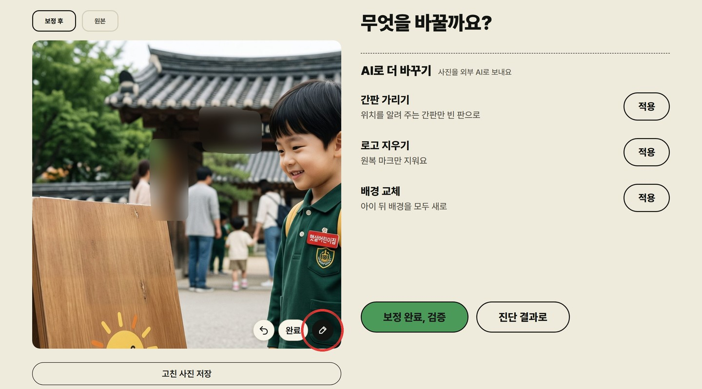
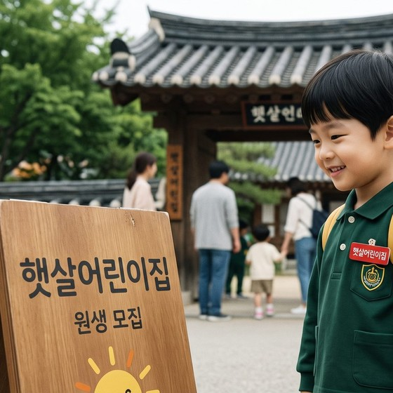
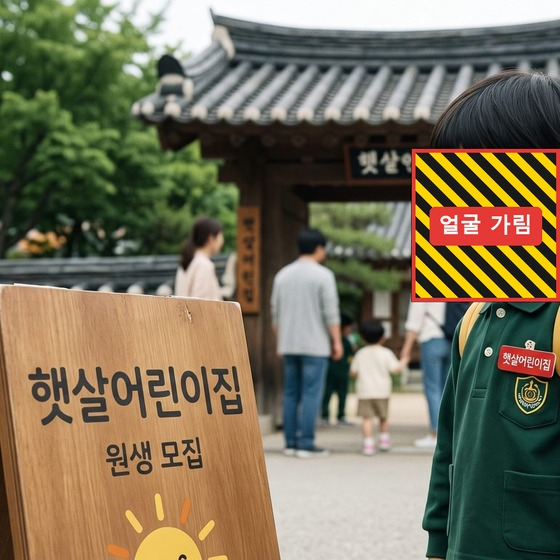
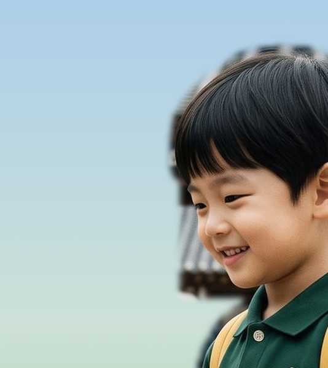
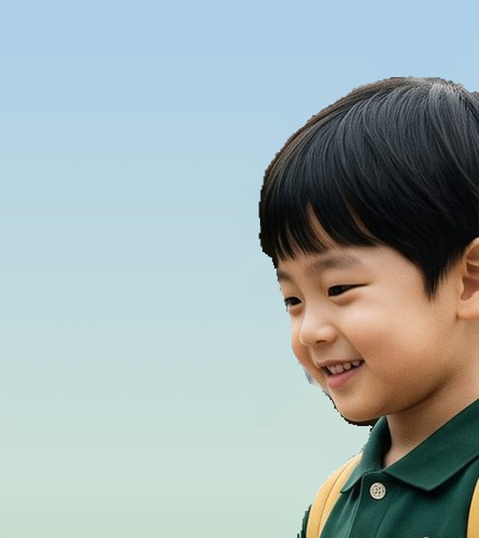

검증 · 들은 것과 바꾼 것
«AI가 알아서 지우는 것보다, 내가 직접 가리고 싶다»
남은 곳은 붓 단추로 직접 문질러 가림

«서버에 아이 얼굴 사진이 들어가는 게 걱정»
진단할 때 서버로는 얼굴 가린 사본만 보냄


«배경을 바꿨는데 잔상이 남는다»
배경 잔상 오류 77% → 0%


수요 조사«얼굴보다 어린이집 이름 · 간판이 걱정» → 얼굴은 그대로, 간판 · 원복 · 명찰부터 찾음
MVP 체험«평범한 옷을 교복으로 잡는다» → 소속 단서 표시를 가슴 부분으로 좁힘
수요 조사«가린 티가 나고 화질이 떨어진다» → 모자이크 대신 그 부분만 다시 그림
MVP 체험«앱이 튕긴다» → 사진 크기를 줄여 메모리 761MB → 176MB